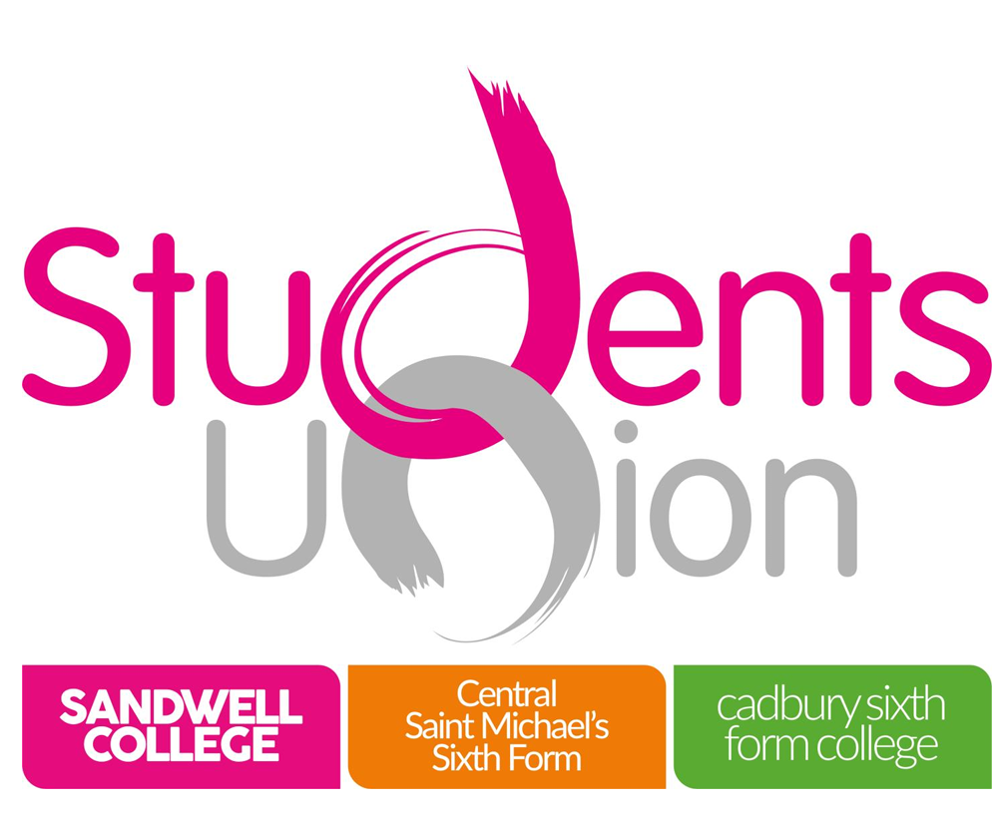
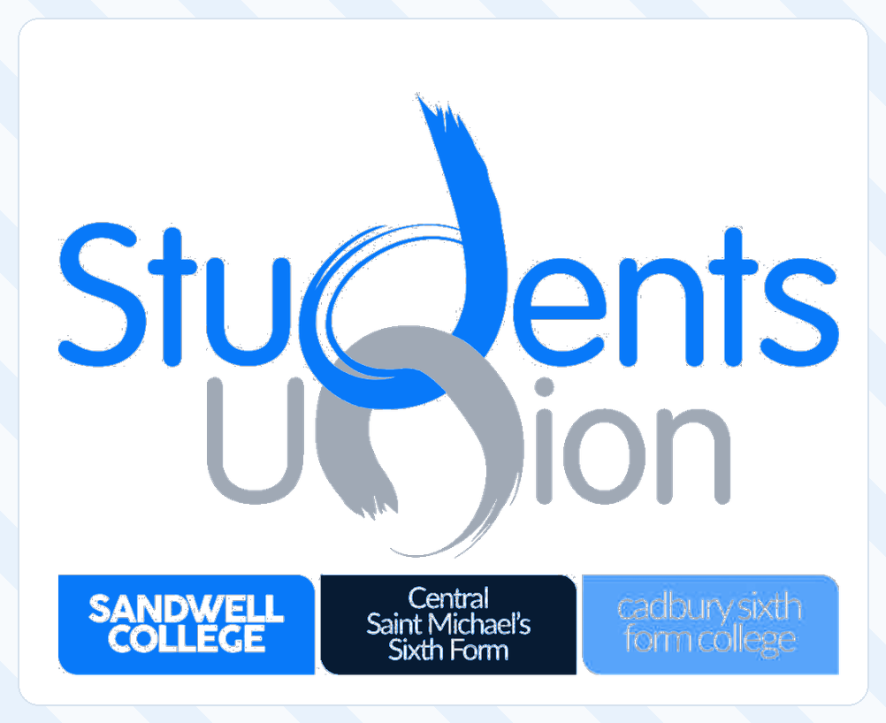

01
A transparent, public-facing Union
A stronger online presence, regular updates and clearer communication so students can see what the Students' Union is doing and how their voice leads to action.

STUDENTS'STUDENTS' UNION ELECTION
A student-led campaign for a more transparent, connected and representative Students' Union — across every centre and every course.
Monday 5 October · 9:00am

WHAT I WANT TO BUILD
Six practical priorities focused on visibility, representation, participation and opportunities.
A stronger online presence, regular updates and clearer communication so students can see what the Students' Union is doing and how their voice leads to action.
Strengthen local student representation at Sandwell College, Central Saint Michael's and Cadbury Sixth Form while keeping everyone connected under one central Students' Union.
More visible and effective course representatives, with a clear route from student → course rep → college union → real change.
Create more ways for students to learn, connect and build confidence beyond their courses through Model United Nations, inter-college activities and university connections.
Explore more educational, university, cultural and student trips that extend learning beyond the classroom and give students more opportunities to experience something new.
Raise student feedback on the length and timing of breaks and work with the college to explore whether break arrangements could better support students.
FROM YOUR COURSE TO THE UNION
A simple representation pathway can make it easier to know where to raise an issue or idea.
BEYOND THE CLASSROOM
College life should include opportunities to meet people, test ideas, build confidence and connect with the wider education community.
Develop debate, diplomacy and public-speaking opportunities.
Create opportunities for students from different centres to work together.
Explore more educational, university and student trips that extend learning beyond the classroom.
Explore collaborations that connect students with wider academic communities.
Create workshops, speaker sessions and leadership opportunities that help students build confidence.
Give students more chances to discuss ideas, present arguments and take part in student-led events.
Build opportunities to meet professionals, alumni and organisations beyond the classroom.
THE CAMPAIGN
Make it easier for students to raise issues, ideas and priorities.
Strengthen the route from individual courses and centres to the wider Union.
Communicate progress and work with the Union team to turn ideas into action where possible.
YOUR VOICE MATTERS
Have an idea for the Students' Union? Want to support the campaign? Get in touch and help shape the conversation.